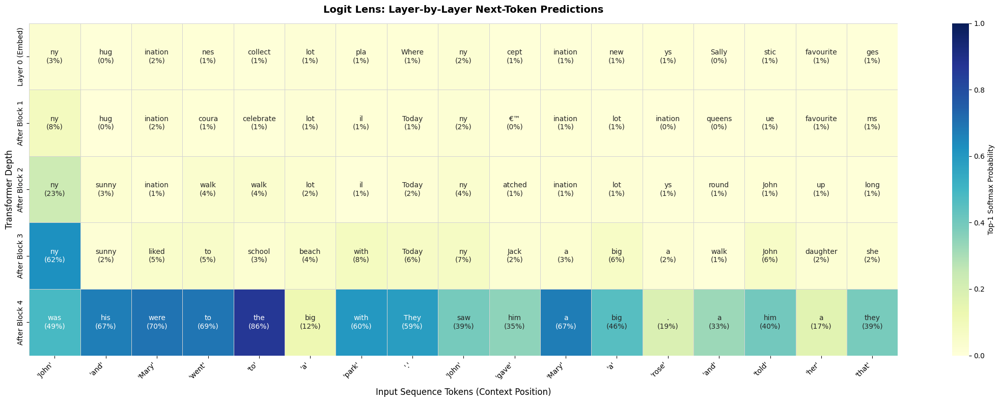
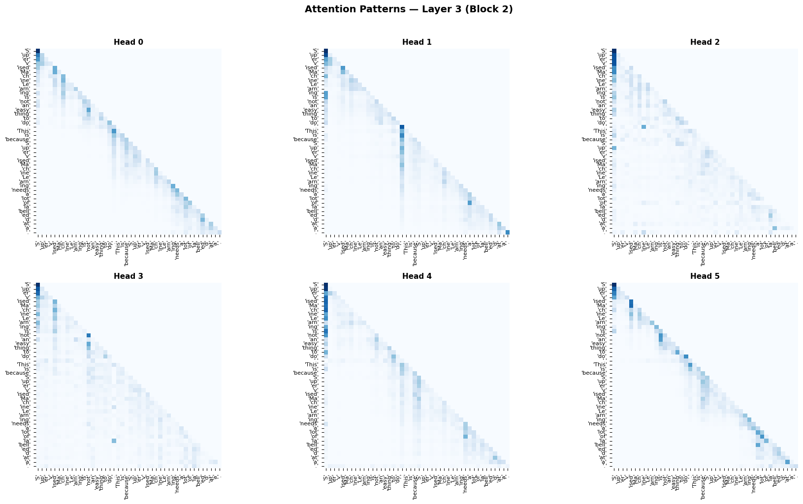
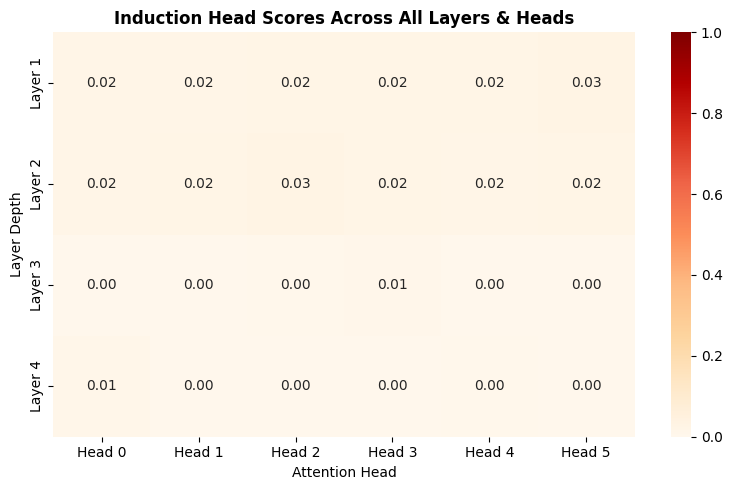
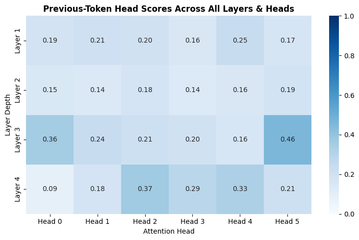

Mechanistically Interpreting a Custom Transformer
Sanyam Asthana, 25th July 2026
Note: The page can take a bit to load because it has to fetch from a CDN for the interactive demos.
Mechanistically Interpreting?
Interpretability, specifically Mechanistic Interpretability is a fresh field which aims to open the presumed black-box model of neural networks. It aims to understand how the internals of a model work to produce the output, and which components of the model carry out which task.
Okay cool, but why do this?
While training massive LLMs, a huge amount of data is thrown at them (yes, "thrown") and it is hoped that gradient descent does all the necessary work of creating algorithms to model the text. The model does indeed do a great job of doing so, thanks to the incredible architecture of the Transformer, but the problem is that how this architecture actually learns to model text is completely opaque to the average model trainer.
First of all, opening up a black box and peeking inside is just very cool, but aside from the feel-good-factor, it is a useful practice to do so for a number of reasons:
- If a model is failing to carry out a specific task, generally it is fed with more quality data. Mechanistic Interpretability (or MechInterp for short) helps us diagnose the exact points of failures inside the model.
- If a model has learned some dangerous facts or biases (think malicious procedures and racial/social biases), we can find out where this information exists inside the model and fix the issues. This process is called Machine Unlearning.
Prerequisites
A decent knowledge of Transformers is assumed. A very basic idea of mechanistic interpretability is welcome but not needed :)
Agenda
We'll be building and training a tiny transformer from scratch and then we'll do some interpretation analysis on it.
The Model
We'll be building a 1.96M parameter transformer which I'll be calling "Mello I1" (the 'I' stands for "interpretability"). Following are the specifications of the model:
- Model dimensions: 132
- Number of Blocks: 4
- Number of Heads: 6
- MLP hidden layer dimensions: 4 * 132
- Context length (tokens): 256
- Dataset: TinyStories
The following few subsections are the code-blocks for building the transformer. You can skip ahead if you want.
Importing modules
We first need to import the modules needed to build the model:
CODE
import torch
import torch.nn as nn
import numpy as np
from datasets import load_dataset
from tokenizers import Tokenizer, models, trainers, pre_tokenizersWe need datasets and tokenisers because we'll be downloading the TinyStories dataset and training a BPE (Byte-pair encoding) tokeniser on the vocabulary of the dataset, as opposed to the redundant 50K token vocabulary of GPT-2.
Setting up a configuration
I prefer to make a config class to prevent any hardcoded values in the rest of the code:
CODE
class Config():
def __init__(self, d_model=132, n_ctx=256, n_blocks=4, n_heads=6, batch_size=128, n_vocab=4096):
assert(d_model % n_heads == 0)
self.d_model = d_model
self.n_ctx = n_ctx
self.n_blocks = n_blocks
self.n_heads = n_heads
self.d_head = d_model // n_heads
self.d_mlp = 4 * d_model
self.batch_size = batch_size
self.n_vocab = n_vocab
self.training = True
self.stop_before_block = 1The self.training and self.stop_before_block attributes are for later when we will be interpreting the model. They serve no purpose for the core architecture of the model.
Multi-Head Attention
We then build the Multi-Head Attention component:
CODE
class MHA(nn.Module):
def __init__(self, cfg: Config):
super().__init__()
self.cfg = cfg
self.W_Q = nn.Linear(cfg.d_model, cfg.d_model)
self.W_K = nn.Linear(cfg.d_model, cfg.d_model)
self.W_V = nn.Linear(cfg.d_model, cfg.d_model)
self.W_O = nn.Linear(cfg.d_model, cfg.d_model)
self.softmax = nn.Softmax(dim=-1)
self.register_buffer("mask", torch.triu(torch.ones(cfg.n_ctx, cfg.n_ctx), diagonal=1))
def forward(self, X):
B, T, C = X.shape
Q = self.W_Q(X)
K = self.W_K(X)
V = self.W_V(X)
Q = Q.view((B, T, self.cfg.n_heads, self.cfg.d_head))
K = K.view((B, T, self.cfg.n_heads, self.cfg.d_head))
V = V.view((B, T, self.cfg.n_heads, self.cfg.d_head))
Q = Q.transpose(1, 2)
K = K.transpose(1, 2)
V = V.transpose(1, 2)
raw_scores = (Q @ K.transpose(-1, -2)) / torch.sqrt(torch.tensor(self.cfg.d_head))
masked_scores = raw_scores.masked_fill(self.mask[:T, :T] == 1, float('-inf'))
attention = self.softmax(masked_scores) @ V
attention = attention.transpose(1, 2).contiguous().view((B, T, self.cfg.d_model))
return self.W_O(attention)This is a pretty standard implementation for the attention component.
Multi-Layer Perceptron
Next is the Multi-Layer Perceptron component:
CODE
class MLP(nn.Module):
def __init__(self, cfg: Config):
super().__init__()
self.cfg = cfg
self.layer1 = nn.Linear(cfg.d_model, cfg.d_mlp)
self.layer2 = nn.Linear(cfg.d_mlp, cfg.d_model)
self.act_fun = nn.GELU()
def forward(self, X):
h_1 = self.layer1(X)
h_1 = self.act_fun(h_1)
h_2 = self.layer2(h_1)
return h_2Again, pretty standard implementation (I should stop saying this).
LayerNorm
The LayerNorm component:
CODE
class LN(nn.Module):
def __init__(self, cfg: Config):
super().__init__()
self.cfg = cfg
self.ϵ = 1e-5
self.γ = nn.Parameter(torch.ones(cfg.d_model))
self.β = nn.Parameter(torch.zeros(cfg.d_model))
def forward(self, X):
μ = X.mean(dim=-1, keepdim=True)
σ_2 = X.var(dim=-1, keepdim=True, unbiased=False)
X̂ = (X - μ) / torch.sqrt(σ_2 + self.ϵ)
y = self.γ * X̂ + self.β
return yTransformer Block
We then combine the above components into a Transformer Block:
CODE
class Block(nn.Module):
def __init__(self, cfg: Config):
super().__init__()
self.cfg = cfg
self.mha = MHA(cfg)
self.mlp = MLP(cfg)
self.ln1 = LN(cfg)
self.ln2 = LN(cfg)
def forward(self, X):
X = X + self.mha(self.ln1(X))
X = X + self.mlp(self.ln2(X))
return XWe use Pre-LayerNorm for better stability of model training.
Transformer
Finally, we build the Transformer class wrapping all the components we built, along with the embeddings and unembedding.
CODE
class Transformer(nn.Module):
def __init__(self, cfg: Config):
super().__init__()
self.cfg = cfg
self.W_E = nn.Embedding(cfg.n_vocab, cfg.d_model)
self.W_U = nn.Linear(cfg.d_model, cfg.n_vocab)
self.W_P = nn.Embedding(cfg.n_ctx, cfg.d_model)
self.blocks = nn.ModuleList([Block(cfg) for _ in range(cfg.n_blocks)])
def forward(self, X):
_, T = X.shape
device = X.device
X = self.W_E(X)
positions = torch.arange(T).to(device)
X = X + self.W_P(positions)
if self.cfg.training:
for block in self.blocks:
X = block(X)
else:
for block in self.blocks[0: self.cfg.stop_before_block]:
X = block(X)
return self.W_U(X)Notice that we don't use weight-tying to tie the weights of W_E and W_U as is done usually. This is because doing so makes interpretability harder, so it's better to keep the weights separate even if it increases the model parameters slightly.
Also notice how we are using our condition Config.training defined in our Config object. We make a separate else branch for processing the blocks. If Config.training is set to False, the model will apply the unembedding transformation before processing any further than the block defined in Config.stop_before_block and return whatever logits were processed till that stage. This piece of code will come in handy later. This isn't the cleanest way of achieving this, but it works :)
Training
We train the transformer on the TinyStories dataset, but first we need to get our tokeniser ready.
Tokeniser and Initialization
CODE
from transformers import PreTrainedTokenizerFast, GPT2Config, GPT2LMHeadModel
tokenizer = Tokenizer(models.BPE())
tokenizer.pre_tokenizer = pre_tokenizers.Whitespace()
trainer = trainers.BpeTrainer(
vocab_size=4096,
special_tokens=["<pad>", "<unk>", "<|endoftext|>"]
)
def batch_iterator():
for i in range(0, len(dataset), 1000):
yield dataset["train"][i:i+1000]["text"]
tokenizer.train_from_iterator(batch_iterator(), trainer=trainer)
tokenizer.save("tinystories_4k_tokenizer.json")
tokenizer = PreTrainedTokenizerFast(
tokenizer_file="tinystories_tokenizer.json",
bos_token="<|endoftext|>",
eos_token="<|endoftext|>",
pad_token="<pad>",
unk_token="<unk>"
)
cfg = Config(
n_vocab=len(tokenizer)
)
model = Transformer(cfg)
print(f"Total Model Parameters: {sum(p.numel() for p in model.parameters()) / 1e6:.2f}M")DataLoader
We need to set up a PyTorch dataloader so we can train on the fetched dataset.
CODE
from torch.utils.data import Dataset, DataLoader
from torch.optim import AdamW
from torch.optim.lr_scheduler import CosineAnnealingLR
class TinyStoriesDataset(Dataset):
def __init__(self, hf_dataset, tokenizer, max_ctx=256):
self.data = hf_dataset
self.tokenizer = tokenizer
self.max_ctx = max_ctx
def __len__(self):
return len(self.data)
def __getitem__(self, idx):
text = self.data[idx]['text']
tokens = self.tokenizer.encode(text)
eos_id = self.tokenizer.eos_token_id
tokens.append(eos_id)
pad_id = self.tokenizer.pad_token_id
target_length = self.max_ctx + 1
if len(tokens) >= target_length:
tokens = tokens[:target_length]
else:
tokens = tokens + [pad_id] * (target_length - len(tokens))
tensor_tokens = torch.tensor(tokens, dtype=torch.long)
return tensor_tokens
train_slice = dataset['train'].select(range(100000))
train_dataset = TinyStoriesDataset(train_slice, tokenizer, max_ctx=cfg.n_ctx)
train_loader = DataLoader(train_dataset, batch_size=cfg.batch_size, shuffle=True, drop_last=True)
print(f"Total Training Batches: {len(train_loader)}")Training Loop
We then write the training loop:
CODE
device = torch.device("cuda" if torch.cuda.is_available() else "mps" if torch.backends.mps.is_available() else "cpu")
print(f"Device: {device}")
model = model.to(device)
model.train()
pad_id = tokenizer.pad_token_id
criterion = nn.CrossEntropyLoss(ignore_index=pad_id)
epochs = 2
lr = 1e-3
optimizer = AdamW(model.parameters(), lr=lr, weight_decay=0.01)
scheduler = CosineAnnealingLR(optimizer, T_max=epochs * len(train_loader))
for epoch in range(epochs):
running_loss = 0.0
for step, batch in enumerate(train_loader):
batch = batch.to(device)
inputs = batch[:, :-1]
targets = batch[:, 1:]
optimizer.zero_grad()
logits = model(inputs)
loss = criterion(logits.view(-1, cfg.n_vocab), targets.reshape(-1))
loss.backward()
torch.nn.utils.clip_grad_norm_(model.parameters(), max_norm=1.0)
optimizer.step()
scheduler.step()
running_loss += loss.item()
if (step + 1) % 500 == 0:
avg_loss = running_loss / 500
print(f"Epoch [{epoch+1}/{epochs}] | Step [{step+1}/{len(train_loader)}] | Loss: {avg_loss:.4f} | LR: {scheduler.get_last_lr()[0]:.6f}")
running_loss = 0.0
torch.save(model.state_dict(), "mello-i1_weights.pt")
print("Training complete!")We use the AdamW optimizer and LR Scheduling for stable training, and train the transformer with 2 epochs. We then save the trained weights in a PyTorch tensors file.
Sampling
Finally, we write the code to sample from our model.
CODE
@torch.no_grad()
def generate(model, tokenizer, prompt, max_new_tokens=100, temperature=0.7, top_k=50):
model.eval()
device = next(model.parameters()).device
encoded_prompt = tokenizer.encode(prompt)
input_ids = torch.tensor([encoded_prompt], dtype=torch.long, device=device)
eos_id = tokenizer.eos_token_id
for _ in range(max_new_tokens):
input_crop = input_ids[:, -cfg.n_ctx:]
logits = model(input_crop)
next_token_logits = logits[0, -1, :] / temperature
if top_k is not None and top_k > 0:
v, _ = torch.topk(next_token_logits, min(top_k, next_token_logits.size(-1)))
next_token_logits[next_token_logits < v[-1]] = -float('Inf')
probs = torch.softmax(next_token_logits, dim=-1)
next_token = torch.multinomial(probs, num_samples=1)
input_ids = torch.cat([input_ids, next_token.unsqueeze(0)], dim=-1)
if next_token.item() == eos_id:
break
generated_text = tokenizer.decode(input_ids[0].tolist())
return generated_text
prompt = "John and Mary went to a park. John gave Mary a rose and told her that"
output = generate(model, tokenizer, prompt, max_new_tokens=10, temperature=0.7, top_k=40)
if cfg.training == False:
print(f"Stopped before block {cfg.stop_before_block}")
print(output)We use temperature and Top K measures to not sample greedily from the output probabilities.
Here we also have a conditional construct on the condition cfg.training == False. This construct is just for a visible feedback for indicating that the processing has not been done through the complete model.
The completion we get for our prompt is: John and Mary went to a park . John gave Mary a rose and told her that was a special gift . They had a very special. Not a bad completion given the parameters we set!
Interpretation
Now for the most fun part! We'll be analysing the model we just trained and interpreting what task its components carry out.
Logit Lens
A very basic way of interpreting what each of the blocks of the transformer is up to, is to use something called the logit lens. What we do is apply the unembedding transformation (which is usually applied after the last block) after a specified block we wish to interpret, and get the token probabilities from an "incompletely processed" procedure. This is precisely why we had the Config.stop_before_block attribute in our Config class. It is the configuration which defines the block after we wish to apply the unembedding.
Given that the required code already exists in our model architecture, we just need to update our configuration:
CODE
cfg.training = False
cfg.stop_before_block = 4Here are the results we get:
| Stopping before block # | Output completion |
| 1 | John and Mary went to a park . John gave Mary a rose and told her that ms days street places ide walk ill driver ied chur |
| 2 | John and Mary went to a park . John gave Mary a rose and told her that swing iest adventure with some big train hanging ut iful |
| 3 | John and Mary went to a park . John gave Mary a rose and told her that she went to play with her swimming brightly . First |
| 4 | John and Mary went to a park . John gave Mary a rose and told her that was a special gift . They had a very special |
We see that before the third block, the model was spitting out a bunch of non-words. After the third block is when the model started giving actual words, even though they don't form a coherent sense. After the fourth block, which is actually the complete process through the model, the model gives out completions that start to make coherent sense.
Performing this analysis on each token predicted by the model gives the following chart (you may want to open it in a new tab to get a better look):

Though this technique is really simple, there are indeed downsides to this. The bases of the matrix of the previous blocks can differ from the bases of the later blocks, and the unembedding matrix is trained according to the bases of the last block. This too, is a reason for the output to improve as we go further towards the final blocks of the model.
Attention Patterns
A very cool thing we can do is plot the attention pattern between the tokens for each head of a layer. This visually shows us how different tokens attend to each other in the model heads.
What's more interesting is that during training, heads (or combination of heads of subsequent layers) evolve into interpretable circuits which serve a specific function. A very popular and widely studied such circuit is the Induction Circuit. The induction circuit is the reason LLMs can replicate earlier sequences of phrases mentioned in the text, without them being initially present in their training data. You can read more about induction circuits in this article by Anthropic.
We can achieve this like so:
CODE
import matplotlib.pyplot as plt
import seaborn as sns
@torch.no_grad()
def plot_attention_patterns(model, tokenizer, prompt, layer_idx=3):
model.eval()
device = next(model.parameters()).device
cfg.training = True
token_ids = tokenizer.encode(prompt)
tokens_str = [f"'{tokenizer.decode([t])}'" for t in token_ids]
seq_len = len(token_ids)
input_ids = torch.tensor([token_ids], dtype=torch.long, device=device)
attn_weights = None
def mha_hook(module, input, output):
nonlocal attn_weights
X = input[0]
B, T, C = X.shape
Q = module.W_Q(X).view(B, T, cfg.n_heads, cfg.d_head).transpose(1, 2)
K = module.W_K(X).view(B, T, cfg.n_heads, cfg.d_head).transpose(1, 2)
raw_scores = (Q @ K.transpose(-1, -2)) / torch.sqrt(torch.tensor(cfg.d_head))
masked_scores = raw_scores.masked_fill(module.mask[:T, :T] == 1, float('-inf'))
attn_weights = module.softmax(masked_scores).detach().cpu()
target_mha = model.blocks[layer_idx].mha
handle = target_mha.register_forward_hook(mha_hook)
_ = model(input_ids)
handle.remove()
n_heads = cfg.n_heads
fig, axes = plt.subplots(2, (n_heads + 1) // 2, figsize=(18, 10))
axes = axes.flatten()
for h in range(n_heads):
ax = axes[h]
matrix = attn_weights[0, h].numpy()
sns.heatmap(
matrix,
ax=ax,
cmap="Blues",
cbar=False,
xticklabels=tokens_str,
yticklabels=tokens_str,
vmin=0.0,
vmax=1.0,
square=True
)
ax.set_title(f"Head {h}", fontsize=11, fontweight="bold")
ax.tick_params(axis='x', rotation=90, labelsize=8)
ax.tick_params(axis='y', rotation=0, labelsize=8)
for h in range(n_heads, len(axes)):
fig.delaxes(axes[h])
plt.suptitle(f"Attention Patterns: Layer {layer_idx + 1} (Block {layer_idx})", fontsize=14, fontweight="bold", y=1.02)
plt.tight_layout()
plt.show()
prompt = "Supervised Machine Learning is not an easy thing to do. This is because Supervised Machine Learning needs a lot of labelled data."
plot_attention_patterns(model, tokenizer, prompt, layer_idx=2)This gives us the following plot(s):

Though using the above code we can create static representations of our transformer blocks, we can also use an incredible library called CircuitsVis to create interactive web demos instead of static plots:
Block 1
Block 2
Block 3
Block 4
Cool, right?
Looking at the attention patterns alone, we cannot spot an obvious induction head. For an induction head, we would've expected the token/group of tokens "Supervised" (the second occurrence) to attend to "Machine" (the first occurrence) and so on. So, basically, in an induction head, a token in a recurring phrase attends to the tokens that follow its previous occurrence.
Though we cannot spot an obvious induction head, it is still worth quantifying the findings:

We now confirm that none of our heads have evolved into an induction head. This is expected, the primary reason being the model being too small for an intricate induction circuit to develop. There simply isn't much parameter bandwidth to allocate individual attention heads for this specialized task.
However, we can still find out if there are any Previous Token Heads which have been developed. As the name suggests, previous token heads are heads in which a token primarily attends to the previous token. Unlike induction circuits, previous token circuits are one-head circuits i.e., they consist of just one head, and hence are more easily developed in a model.
Inspecting the attention patterns again, some heads in block 3 appear to be attending to previous tokens. Let's quantify this to confirm our hypothesis:

We see that Block 3 Head 5 is a strong contender for a previous token head and indeed, if we inspect its attention pattern in the interactive demo, we see that almost all tokens attend greatly to their previous tokens. Nice! One of our heads has evolved into a previous token head.
Ablation
Now we know that Block 3 Head 5 attends to the previous token. Let's see what happens when we remove that head from our network. Intentionally removing components from a network to see how the output changes is called ablation.
We cannot physically "remove" the head from the model, as that would lead to a mismatch in dimensions, so what we do instead is set all of the head's weights to zero. Now we could implement this change in the model architecture itself, but changing the architecture of the model would not be the cleanest option. What we can do instead is use another incredible library called NNSight. NNSight allows us to intercept the connections in between our model and apply changes to them. We will use NNSight to set the weights of Block 3 Head 5 to zero:
CODE
import torch
import torch.nn.functional as F
from nnsight import NNsight
@torch.no_grad()
def generate_ablated_story_nnsight(model, tokenizer, prompt, max_new_tokens=10, temperature=0.7, top_k=40):
model.eval()
device = next(model.parameters()).device
cfg.training = True
tracer = NNsight(model)
encoded_prompt = tokenizer.encode(prompt)
input_ids = torch.tensor([encoded_prompt], dtype=torch.long, device=device)
eos_id = tokenizer.eos_token_id
head_idx = 5
d_head = cfg.d_model // cfg.n_heads
start_dim = head_idx * d_head
end_dim = (head_idx + 1) * d_head
for _ in range(max_new_tokens):
input_crop = input_ids[:, -cfg.n_ctx:]
with tracer.trace(input_crop):
attn_concat = tracer.blocks[2].mha.W_O.input
attn_concat[:, :, start_dim:end_dim] = 0.0
logits_proxy = tracer.W_U.output.save()
logits = logits_proxy
next_token_logits = logits[0, -1, :] / temperature
if top_k is not None and top_k > 0:
v, _ = torch.topk(next_token_logits, min(top_k, next_token_logits.size(-1)))
next_token_logits[next_token_logits < v[-1]] = -float('Inf')
probs = torch.softmax(next_token_logits, dim=-1)
next_token = torch.multinomial(probs, num_samples=1)
input_ids = torch.cat([input_ids, next_token.unsqueeze(0)], dim=-1)
if next_token.item() == eos_id:
break
return tokenizer.decode(input_ids[0].tolist())
prompt = "John and Mary went to a park. John gave Mary a rose and told her that"
output = generate_ablated_story_nnsight(model, tokenizer, prompt, max_new_tokens=15)
print(output)The output we get is: John and Mary went to a park . John gave Mary a rose and told her that they could draw er . They had a big castle they were inside . John.
We see that there is a substantial change in the quality of the output by just ablating one head. Indeed attending to the previous token is an essential part of language modeling!
Conclusion
We have successfully built and trained a transformer and then performed some mechanistic analysis on it pertaining to some components. The field of Mechanistic Interpretability is still very new and quickly expanding. What might be new today will be history tomorrow. MechInterp's nature of demystifying the black-box which a ton of people have already started to rely on is what makes the field so exciting!
Farewell!